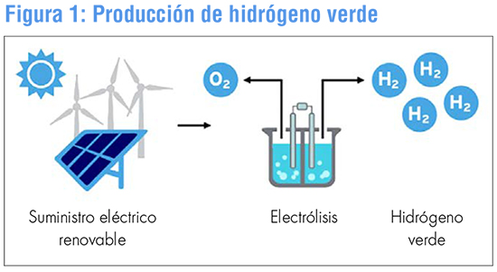

Imagen: induambiente.com
La obtención del hidrógeno molecular (H2), está ligada al agua (H20) donde vamos a encontrar a los átomos de hidrógeno ligados a los átomos de oxígeno formando esta molécula. Mediante la reacción química de la hidrólisis vamos a descomponer las moléculas (sustancia) de H20 en dos moléculas: H2 (hidrógeno molecular: muy energético) y O2 (molécula de oxígeno: que utilizamos para la respiración las plantas y los animales).
En este proceso de hidrólisis estan implicados muchos factores y necesitamos de una buena base teórica para entenderlo bien. A continuación deberás afianzar una serie de conceptos teóricos y de cálculo ligados a las reacciones químicas y que os proponemos en una serie de sesiones teóricas y una prueba escrita.
Este apartado teórico se desarrollará en 5 sesiones en el aula, teniendo como referencia el tema 4 del libro de texto: Reacciones Químicas donde se tratarán los aspectos siguientes:
- Cambios químicos (reacciones) y cambios físicos: diferencias e indicios.
- Análisis de las reacciones a nivel atómico y macroscópico (teoría de colisiones)
- Ley de la conservación de la masa y de las proporciones definidas.
- Concepto de mol
- Ajuste de ecuaciones químicas y cálculos estequiométricos de masas y volúmenes
- Factores de los que depende la velocidad de una reacción química..